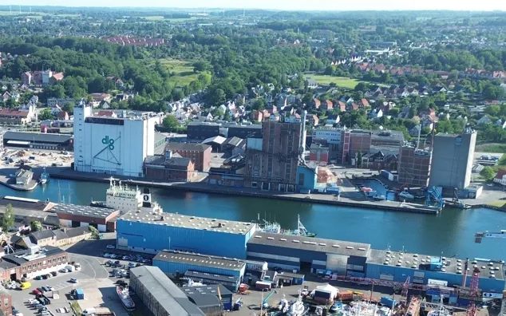
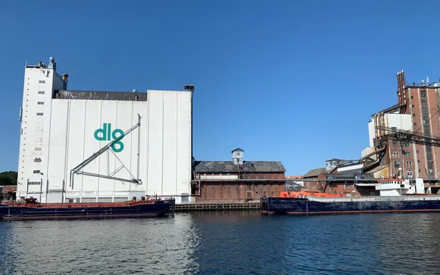
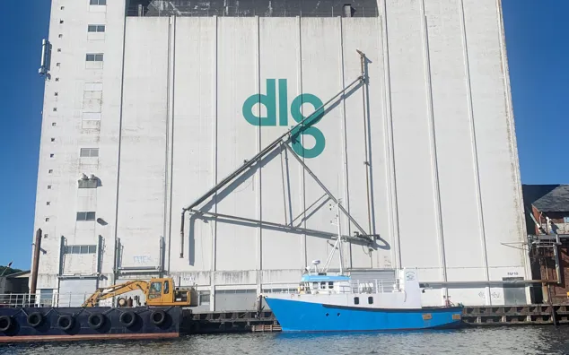

Svendborg Havn · Østre Kaj
Siloerne forsvinder snart.
Hjælp os med at huske dem.
Siloerne har i årtier været en del af Svendborgs skyline. Nu skal de rives ned. Vi samler billeder, videoer, lydoptagelser, historier og ting til et fælles arkiv, før de forsvinder.
- bidrag
- –
- billeder
- –
- videoer
- –
- lyd og dokumenter
- –
Fra alle vinkler og afstande
Vi vil gerne have så meget som muligt: nye og gamle billeder, korte mobilvideoer, droneoptagelser, scannede papirbilleder, avisudklip, arbejdssedler, fortællinger og lydoptagelser. Intet er for lille eller for hverdagsagtigt.
- Bor du i Svendborg? Billeder fra vinduet, gåturen langs havnen eller udsigten fra Tåsinge og Thurø.
- Sejler du forbi? Siloerne set fra vandet, fra færgen eller fra broen.
- Har du arbejdet der? Dine historier om arbejdet, kollegerne, skibene og hverdagen inde i bygningerne er guld værd. Har du gamle billeder eller ting fra dengang, vil vi meget gerne se dem.
- Gamle familiebilleder? Siloerne gemmer sig ofte i baggrunden. Tag et billede af papirbilledet med mobilen, det er fint nok.
Læs også Svendborg Kommunes open call om fremtiden for siloerne på Østre Kaj.


Sender dit bidrag …
Luk ikke siden, før alt er sendt. Store videoer kan tage et stykke tid.
Bidrag
Ingen bidrag endnu, der passer. Bliv den første, og del dit.
Hvor er billederne taget?
Alle billeder og videoer med GPS-placering. Jo flere vinkler og afstande, jo bedre.
Privatliv og rettigheder
Hvad vi gemmer
- Vi gemmer ikke dine originale filer. De omkodes til almindelige formater i høj kvalitet: billeder som JPEG i op til A3-printstørrelse, video som MP4 i op til 1080p, lyd som M4A og dokumenter som PDF. Derefter slettes originalen.
- Oplysningerne i filerne bevares, f.eks. dato, kameramodel og GPS-placering. Placeringen vises offentligt på kortet, og den kan også læses af alle, der henter filen.
- Din e-mail vises aldrig og bruges kun, hvis du har sagt ja til at blive kontaktet.
- For at beskytte mod spam gemmer vi en krypteret (hashet) udgave af din IP-adresse i kort tid. Spambeskyttelsen leveres af Cloudflare Turnstile.
Dine rettigheder
- Krediteringen (hvem der har taget billederne eller ejer materialet) gemmes altid. Den vises kun offentligt, ved bidraget og inde i filerne, hvis du sætter kryds ved det. Ellers fjerner vi også navne fra filernes egne oplysninger.
- Du beholder ophavsretten til dit materiale. Du giver os lov til at vise det her og gemme det i arkivet om siloerne.
- Vil du have et bidrag rettet eller fjernet? Skriv til os.
- Ser du noget, der ikke hører hjemme her? Brug knappen Anmeld ved bidraget.